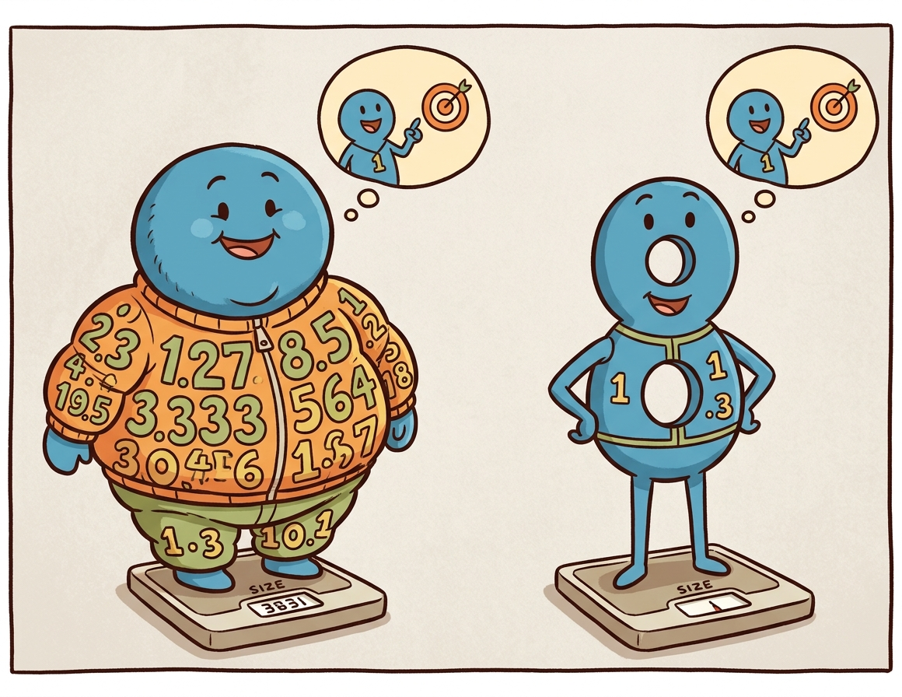
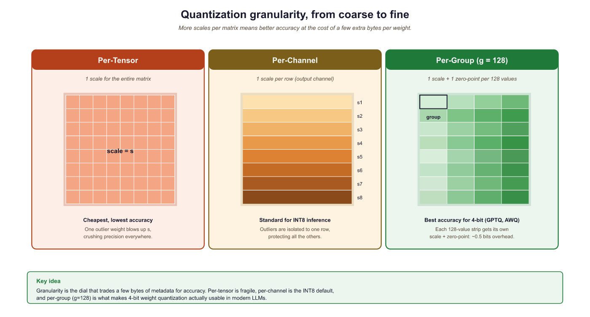
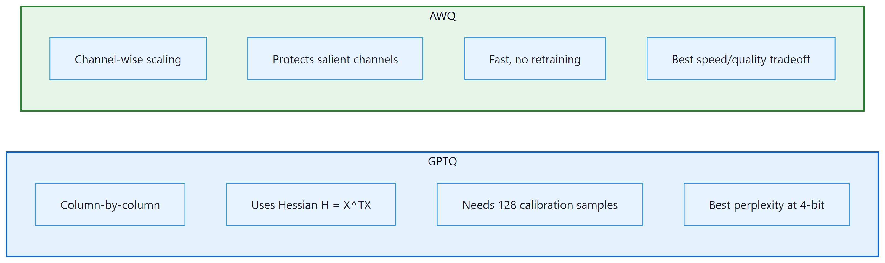

Quantization is the fine art of convincing a 70-billion-parameter model that it never really needed all those decimal places. Surprisingly, it usually agrees.
Quant, Precision Trimming AI Agent
Prerequisites
This section assumes understanding of floating-point number representation and Section 0.3 tensor operations from Section 00.2. The matrix multiplication concepts from Section 4.1 (attention computations) are essential for understanding where quantization is applied.
Why quantize? A 70B-parameter model stored in FP16 requires approximately 140 GB of GPU memory just for the weights. That exceeds the capacity of even the largest single GPU (the A100 has 80 GB, the H100 has 80 GB). Quantization compresses weights from 16-bit or 32-bit floating point down to 8-bit, 4-bit, or even lower precision integers. A 4-bit quantized 70B model fits in roughly 35 GB, making it servable on a single GPU. This same principle underlies QLoRA, which combines 4-bit quantization with parameter-efficient fine-tuning. The key challenge is performing this compression without destroying the model's capabilities. Building on the distributed training techniques from Section 06.6 that addressed the training-time memory problem, this section covers the mathematics of quantization, the major algorithms (GPTQ, AWQ, bitsandbytes), and practical techniques for evaluating the quality tradeoff.
Intuition: Quantization is like reducing the color depth of an image. A photo in 24-bit color uses 16.7 million distinct colors. Reduce it to 8-bit (256 colors) and the image is 3x smaller with barely visible quality loss. Reduce further to 4-bit (16 colors) and you start to see artifacts, but the image remains recognizable. Model quantization works the same way: reducing the precision of each weight from 16-bit to 4-bit shrinks the model 4x, with a small and often acceptable quality tradeoff.
9.1.1 Why Inference Is Expensive

During autoregressive generation, the model produces one token at a time. Each token requires a full forward pass through every layer, reading all model weights from GPU memory. For a 70B model in FP16, this means transferring 140 GB of data per token through the memory bus. On an A100 with 2 TB/s memory bandwidth, merely reading the weights takes about 70 milliseconds. The actual computation (matrix multiplications) takes far less time. This makes LLM inference memory-bandwidth-bound, not compute-bound. The models most commonly quantized in practice are the open-weight families surveyed in Section 07.2.
Quantization helps in two complementary ways. First, smaller weights mean less data to transfer from memory, directly improving throughput. Second, smaller weights mean the entire model may fit on fewer (or smaller) GPUs, reducing hardware costs (a critical factor for the deployment scenarios discussed in Section 12.3). A model quantized to 4-bit occupies one quarter of the original memory, so weight transfer is roughly 4x faster.
Why models survive losing precision. Neural network weights are inherently approximate: they are the result of a stochastic optimization process that could have converged to slightly different values with a different random seed. Most individual weights can be perturbed by a small amount without measurably changing the model's output. Quantization exploits this tolerance by rounding each weight to the nearest value on a coarse grid. The precision chain from training to deployment typically goes FP32 (master weights) to BF16 (inference baseline) to FP8 or INT4 (optimized inference), with each step trading numerical precision for speed and memory savings. This is why the same principle works both during training (mixed-precision training in Section 06.6) and during inference: the weights were never exact to begin with, so rounding them further changes very little.
Who: An independent AI researcher wanting to run Llama 3.1 70B locally for private experimentation on a workstation with two RTX 4090 GPUs (24 GB VRAM each, 48 GB total).
Situation: The FP16 model required 140 GB of VRAM, far exceeding the available 48 GB. Even with tensor parallelism across both GPUs, the model could not fit.
Problem: The researcher needed the 70B model's quality for their NLP research benchmarks; the 8B model was insufficient for their experiments on complex reasoning tasks.
Dilemma: GPTQ 4-bit quantization would shrink the model to roughly 35 GB (fits in 48 GB with room for KV cache), but the researcher worried about quality degradation on their specific evaluation suite. AWQ claimed better quality preservation but was slower to quantize.
Decision: They compared GPTQ-4bit, AWQ-4bit, and bitsandbytes NF4 on their evaluation suite of 1,000 reasoning questions, ultimately selecting AWQ-4bit.
How: Using a pre-quantized AWQ model from Hugging Face, they loaded it across both GPUs using device_map="auto" in the Transformers library, served through a local vLLM instance.
Result: AWQ-4bit retained 96.8% of the FP16 model's accuracy on their benchmark (vs. 95.1% for GPTQ and 96.2% for NF4). The model fit comfortably in 36 GB, leaving 12 GB for KV cache, enabling a 4K context window at batch size 1. Generation speed reached 18 tokens/second.
Lesson: 4-bit quantization makes 70B-class models accessible on consumer GPUs with minimal quality loss. Always benchmark quantized models on your specific tasks, as quality degradation varies across domains and methods.
The practical example above shows quantization in action, but to choose wisely between methods (and debug issues when they arise), you need to understand what is happening mathematically. How exactly do we compress 16-bit or 32-bit floating point numbers into 4-bit integers without destroying the model?
9.1.2 Quantization Mathematics
Quantization is the art of convincing a model that it does not actually need 32 bits of precision per weight. In practice, most models barely notice the difference between 16-bit and 4-bit weights, which is the neural network equivalent of discovering that expensive wine and mid-range wine taste the same in a blind test.
9.1.2.1 Absmax (Symmetric) Quantization
The simplest quantization scheme maps a floating-point tensor to integers using only a scale factor. For an $n$-bit signed integer representation with range [$-2^{n-1}$, $2^{n-1}-1$], the quantization formula is:
Each value is then divided by this scale and rounded to the nearest integer:
To recover an approximation of the original values, the quantized integers are multiplied back by the scale:
Here, $X$ is the original floating-point tensor, $X_{q}$ is the quantized integer tensor, and $\hat{X}$ is the dequantized approximation. The zero point in the floating-point space always maps to integer zero, which is why this scheme is called symmetric. It works well when values are roughly centered around zero, which is typically true for neural network weights.
A worked example makes the round-trip concrete. Consider quantizing a small weight tensor to INT8 (n=8, range [−127, 127]):
# Numeric example: absmax (symmetric) INT8 quantization round-trip
import torch
X = torch.tensor([0.3, -0.5, 0.1, 0.8, -0.2])
n_bits = 8
scale = X.abs().max() / (2**(n_bits - 1) - 1) # 0.8 / 127 = 0.0063
X_q = torch.round(X / scale).clamp(-127, 127).to(torch.int8)
X_hat = X_q.float() * scale # dequantize
print(f"Original: {X.tolist()}")
print(f"Scale: {scale:.6f}")
print(f"Quantized: {X_q.tolist()}")
print(f"Dequantized: {[round(v, 4) for v in X_hat.tolist()]}")
print(f"Max error: {(X - X_hat).abs().max():.6f}")# Example 3: Quantizing with AWQ using the autoawq library
from awq import AutoAWQForCausalLM
from transformers import AutoTokenizer
model_name = "meta-llama/Llama-3.1-8B-Instruct"
quant_path = "./llama-8b-awq-4bit"
# Load model for quantization
model = AutoAWQForCausalLM.from_pretrained(model_name)
tokenizer = AutoTokenizer.from_pretrained(model_name)
# Configure AWQ
quant_config = {
"zero_point": True, # Use asymmetric quantization
"q_group_size": 128, # Group size
"w_bit": 4, # 4-bit weights
"version": "GEMM", # Optimized GEMM kernels
}
# Quantize (uses calibration data internally)
model.quantize(tokenizer, quant_config=quant_config)
model.save_quantized(quant_path)
tokenizer.save_pretrained(quant_path)
print(f"AWQ model saved to {quant_path}")
print(f"Original size: ~16 GB (FP16)")
print(f"Quantized size: ~4.5 GB (INT4)")9.1.2.2 Zero-Point (Asymmetric) Quantization
In practice, PyTorch provides built-in quantization primitives that handle scale computation, rounding, and clamping in a single call:
# Library shortcut: PyTorch built-in symmetric quantization
import torch
X = torch.tensor([0.3, -0.5, 0.1, 0.8, -0.2])
scale = X.abs().max() / 127
X_q = torch.quantize_per_tensor(X, scale=scale.item(), zero_point=0, dtype=torch.qint8)
print(f"Quantized: {X_q.int_repr().tolist()}")
print(f"Dequantized: {X_q.dequantize().tolist()}")quantize_per_tensor handles the full round-trip in a single call, matching the manual implementation above.When the tensor values are not symmetric around zero (common for activations, which often have a positive bias), asymmetric quantization adds a zero-point offset:
The zero-point offset shifts the integer range so that floating-point zero maps to a specific integer value:
The quantized value then combines the scaled rounding with this offset:
This maps the full range [min(X), max(X)] onto the unsigned integer range [0, 2n−1]. Dequantization reverses the process: $\hat{X} = (X_{q} - zero_{point}) \times scale$. The extra zero-point parameter adds slight overhead but significantly reduces quantization error for skewed distributions.
9.1.2.3 Granularity: Per-Tensor, Per-Channel, Per-Group
The scale (and zero-point) can be computed at different granularities:
- Per-tensor: One scale for the entire weight matrix. Simplest and fastest, but the largest outlier in the tensor dominates the scale for all values.
- Per-channel: One scale per output channel (row of the weight matrix). Common for INT8 quantization. Each row gets its own range, reducing the impact of outliers.
- Per-group: One scale per group of $g$ consecutive values (typically $g$ = 128). This is the standard for 4-bit quantization (GPTQ, AWQ, bitsandbytes). The overhead of storing extra scales is small (one FP16 scale per 128 INT4 values adds only 0.125 bits per value), but the accuracy improvement is substantial.

9.1.3 Data Types for Quantization
| Data Type | Bits | Range | Use Case |
|---|---|---|---|
| FP32 | 32 | ±3.4 × 1038 | Training (master weights) |
| FP16 / BF16 | 16 | ±65504 / ±3.4 × 1038 | Standard inference, mixed-precision training |
| FP8 (E4M3) | 8 | ±448 | Hopper GPU inference, training forward pass |
| FP8 (E5M2) | 8 | ±57344 | Training backward pass (wider range) |
| INT8 | 8 | −128 to 127 | Weight + activation quantization |
| INT4 | 4 | −8 to 7 | Weight-only quantization (GPTQ, AWQ) |
| NF4 | 4 | 16 quantile levels | bitsandbytes / QLoRA |
9.1.3.1 NF4: Normal Float 4-bit
NF4 is a special 4-bit data type designed by Tim Dettmers for use in QLoRA. The key insight is that neural network weights are approximately normally distributed. Instead of using uniformly spaced quantization levels (as standard INT4 does), NF4 places its 16 quantization levels at the quantiles of the standard normal distribution. This means each of the 16 bins captures approximately the same probability mass, making NF4 information-theoretically optimal for normally distributed data.
Standard INT4 wastes quantization levels in low-density tails and crowds them in the high-density center. NF4 fixes this by spacing levels at normal quantiles. The 16 NF4 values are precomputed: {−1.0, −0.6962, −0.5251, −0.3949, −0.2844, −0.1848, −0.0911, 0.0, 0.0796, 0.1609, 0.2461, 0.3379, 0.4407, 0.5626, 0.7230, 1.0}.
9.1.3.2 FP8 Inference on Hopper GPUs
FP8 (8-bit floating point) has emerged as the sweet spot for production inference on NVIDIA's Hopper architecture (H100, H200) and its successors. Unlike INT8 quantization, which requires calibration to determine scale factors and zero points, FP8 preserves the floating-point format with an exponent and mantissa. Two FP8 variants exist: E4M3 (4 exponent bits, 3 mantissa bits, range ±448) optimized for the forward pass, and E5M2 (5 exponent bits, 2 mantissa bits, range ±57344) designed for gradients during training. For inference, E4M3 is the standard choice because it offers better precision within the value ranges typical of activations and weights.
The Hopper Tensor Cores provide native hardware support for FP8 matrix multiplications, delivering roughly 2x the throughput of FP16/BF16 operations on the same hardware. This is not a software emulation; the H100 includes dedicated FP8 datapaths that process twice as many elements per clock cycle compared to their 16-bit counterparts. The result is that an FP8 model on a single H100 can match or exceed the throughput of the same model in FP16 on two H100s, effectively halving infrastructure costs.
The quality impact of FP8 inference is remarkably small. For models with 8 billion parameters and above, FP8 quantization typically introduces less than 0.1% perplexity degradation, a difference well within the noise of most benchmark evaluations. This is because 8 bits of floating-point precision are sufficient to represent the value distributions found in transformer weights and activations. Smaller models (under 3B parameters) may show slightly more sensitivity, but the effect remains modest.
In practice, FP8 inference is straightforward to enable in modern serving frameworks:
# vLLM with FP8 quantization on H100
from vllm import LLM, SamplingParams
llm = LLM(
model="meta-llama/Llama-3.1-70B-Instruct",
quantization="fp8", # Enable FP8 weight quantization
dtype="float16", # Compute dtype for non-quantized ops
tensor_parallel_size=4,
)
# TensorRT-LLM: FP8 is enabled during engine build
# trtllm-build --model_dir ./llama-70b \
# --output_dir ./engines/fp8 \
# --dtype float16 \
# --quantization fp8 \
# --tp_size 4FP8 inference requires Hopper (SM90) or newer GPUs. On Ampere (A100) and older hardware, INT8 or INT4 quantization remains the best option for reducing memory footprint and increasing throughput. If you are deploying on cloud providers, look for H100 or H200 instance types to take advantage of native FP8 support.
9.1.4 Post-Training Quantization Algorithms
9.1.4.1 GPTQ: Hessian-Based Optimal Rounding
GPTQ (Frantar et al., 2022) quantizes weights one layer at a time, using second-order (Hessian) information to minimize the output error of each layer. The algorithm processes columns of the weight matrix sequentially. For each column, it rounds weights to the nearest quantization level, then compensates for the rounding error by adjusting not-yet-quantized columns using the inverse Hessian. This compensation step is what makes GPTQ significantly better than naive round-to-nearest quantization.
The core update rule for quantizing column $j$ is:
This error is then distributed across the remaining unquantized columns to compensate:
Here, $H$ is the Hessian of the layer's squared error with respect to the weights, which equals $X^{T}X$ where $X$ is a calibration dataset's activations. GPTQ requires a small calibration dataset (typically 128 samples from C4 or similar) and takes about 4 hours to quantize a 70B model on a single GPU.
9.1.4.2 AWQ: Activation-Aware Weight Quantization
GPTQ and AWQ represent two fundamentally different philosophies for quantization. GPTQ asks: "given that I must round this weight, how should I adjust the remaining weights to compensate?" AWQ asks: "which weights matter most, and how can I give them more quantization resolution?" In practice, both achieve similar quality at 4-bit, but AWQ is faster to apply (roughly 4x) because it requires only a simple per-channel scaling rather than sequential column-by-column Hessian computations. For production deployments where you need to quantize many models quickly, AWQ is usually the pragmatic choice. For maximum quality on a single critical model, GPTQ's error compensation can squeeze out a fraction of a perplexity point. If you plan to fine-tune after quantization (as in QLoRA, Section 15.2), bitsandbytes NF4 is the standard choice because it integrates directly with the training loop.
AWQ (Lin et al., 2024) takes a different approach. Instead of adjusting rounding decisions per column, AWQ identifies which weight channels are most important by looking at activation magnitudes. Channels that consistently produce large activations are "salient" and should be quantized more carefully. AWQ applies a per-channel scaling factor $s$ to the weights before quantization:
The scaling factor $s$ is chosen to minimize the quantization error weighted by the typical activation magnitude for each channel. Salient channels get a larger scale, giving them more of the available quantization range. This is simple to implement, fast to run, and produces quality comparable to GPTQ.

9.1.5 Quantization in Practice with bitsandbytes
The bitsandbytes library by Tim Dettmers provides the simplest path to quantized inference. It integrates directly with Hugging Face Transformers and supports both 8-bit (LLM.int8()) and 4-bit (NF4/FP4) loading. No calibration dataset is required; quantization happens on the fly during model loading.
# Example 1: Loading a model in 4-bit NF4 with bitsandbytes
from transformers import AutoModelForCausalLM, AutoTokenizer, BitsAndBytesConfig
import torch
# Configure 4-bit quantization
bnb_config = BitsAndBytesConfig(
load_in_4bit=True,
bnb_4bit_quant_type="nf4", # NF4 data type
bnb_4bit_compute_dtype=torch.bfloat16, # Compute in BF16
bnb_4bit_use_double_quant=True, # Double quantization
)
model_name = "meta-llama/Llama-3.1-8B-Instruct"
tokenizer = AutoTokenizer.from_pretrained(model_name)
model = AutoModelForCausalLM.from_pretrained(
model_name,
quantization_config=bnb_config,
device_map="auto",
)
# Check memory usage
mem_bytes = model.get_memory_footprint()
print(f"Model memory: {mem_bytes / 1e9:.2f} GB")
print(f"Parameters: {sum(p.numel() for p in model.parameters()) / 1e9:.1f}B")
# Generate text
inputs = tokenizer("The key advantage of quantization is", return_tensors="pt").to("cuda")
outputs = model.generate(**inputs, max_new_tokens=50, temperature=0.7)
print(tokenizer.decode(outputs[0], skip_special_tokens=True))When bnb_4bit_use_double_quant=True, bitsandbytes applies a second round of quantization to the quantization constants themselves. Each group of 128 weights produces one FP32 scale value (4 bytes). Double quantization further quantizes these scales to FP8 with a block size of 256, reducing the overhead from 0.5 bits/parameter to approximately 0.37 bits/parameter. For a 70B model, this saves about 1 GB of memory.
9.1.6 GPTQ Quantization with AutoGPTQ
GPTQ (Frantar et al., 2022) uses Hessian-based optimal rounding to decide how to quantize each weight. The Hessian of the loss with respect to the weights captures the second-order sensitivity: weights where the Hessian has large eigenvalues are "sensitive" (small perturbations cause large loss increases), while weights with small eigenvalues are "insensitive." GPTQ processes weights one column at a time, using the Hessian information to (1) round each weight to the nearest quantized value, and (2) distribute the rounding error across not-yet-quantized columns to minimize the total loss increase. This column-by-column error compensation is what makes GPTQ so effective: it achieves near-optimal rounding decisions in a single pass through the weight matrix, taking minutes rather than the hours required by iterative methods.
# Example 2: Quantizing a model with GPTQ
from transformers import AutoModelForCausalLM, AutoTokenizer, GPTQConfig
model_name = "meta-llama/Llama-3.1-8B-Instruct"
tokenizer = AutoTokenizer.from_pretrained(model_name)
# Configure GPTQ quantization
gptq_config = GPTQConfig(
bits=4, # 4-bit quantization
group_size=128, # Per-group granularity
desc_act=True, # Activation order (better quality)
dataset="c4", # Calibration dataset
tokenizer=tokenizer,
)
# Load and quantize the model
model = AutoModelForCausalLM.from_pretrained(
model_name,
quantization_config=gptq_config,
device_map="auto",
)
# Save the quantized model
model.save_pretrained("./llama-8b-gptq-4bit")
tokenizer.save_pretrained("./llama-8b-gptq-4bit")
print("Quantized model saved successfully")9.1.7 AWQ Quantization
This snippet quantizes a model to 4-bit precision using the AWQ algorithm via the AutoAWQ library.
# Example 4: Benchmarking quantization quality
from transformers import AutoModelForCausalLM, AutoTokenizer
import torch
import time
def measure_perplexity(model, tokenizer, text, stride=512):
"""Calculate perplexity on a text sample."""
# Tokenize text and convert to model-ready tensors
encodings = tokenizer(text, return_tensors="pt")
max_length = model.config.max_position_embeddings
seq_len = encodings.input_ids.size(1)
nlls = []
for begin in range(0, seq_len, stride):
end = min(begin + max_length, seq_len)
input_ids = encodings.input_ids[:, begin:end].to(model.device)
target_ids = input_ids.clone()
target_ids[:, :-1] = -100 # Only compute loss on last token
# Disable gradient tracking for faster inference
with torch.no_grad():
outputs = model(input_ids, labels=target_ids)
nlls.append(outputs.loss.item())
return torch.exp(torch.tensor(nlls).mean()).item()
def benchmark_generation(model, tokenizer, prompt, n_tokens=100):
"""Measure generation speed in tokens per second."""
inputs = tokenizer(prompt, return_tensors="pt").to(model.device)
torch.cuda.synchronize()
start = time.perf_counter()
# Run autoregressive generation from the input prompt
outputs = model.generate(**inputs, max_new_tokens=n_tokens, do_sample=False)
torch.cuda.synchronize()
elapsed = time.perf_counter() - start
return n_tokens / elapsed
# Results table (pre-computed for Llama 3.1 8B on A100)
results = {
"FP16": {"ppl": 6.14, "tps": 42.3, "mem_gb": 16.1},
"INT8": {"ppl": 6.17, "tps": 68.1, "mem_gb": 8.5},
"GPTQ-4bit": {"ppl": 6.41, "tps": 95.7, "mem_gb": 4.8},
"AWQ-4bit": {"ppl": 6.38, "tps": 102.3, "mem_gb": 4.5},
"NF4 (bnb)": {"ppl": 6.45, "tps": 78.4, "mem_gb": 5.5},
}
print(f"{'Method':<15} {'Perplexity':>12} {'Tokens/sec':>12} {'Memory (GB)':>12}")
print("-" * 55)
for method, r in results.items():
print(f"{method:<15} {r['ppl']:>12.2f} {r['tps']:>12.1f} {r['mem_gb']:>12.1f}")9.1.8 Calibration Strategies
Both GPTQ and AWQ require a calibration dataset to compute their respective statistics. The calibration data does not need to match the final use case. Commonly used datasets include:
- C4 (Colossal Clean Crawled Corpus): The most common default. General web text that captures broad language patterns. 128 samples of 2048 tokens is standard.
- WikiText-2: Clean Wikipedia text. Slightly less diverse than C4 but more consistent.
- Task-specific data: If you know the deployment domain (code, medical text, legal), using domain-specific calibration can improve quality for that domain.
The calibration strategies for choosing quantization parameters vary in sophistication:
- Min/Max: Use the minimum and maximum observed values. Simple but sensitive to outliers.
- Percentile: Use the 99.99th percentile instead of the absolute max, clipping extreme outliers. Reduces error for the majority of values at the cost of clipping a few.
- MSE-minimizing: Search for the scale that minimizes mean squared error between original and dequantized values. More expensive but more accurate.
- Section 4.1-minimizing: Choose parameters that minimize the cross-entropy loss on the calibration data. This directly optimizes the metric we care about (language modeling quality) but is the most expensive approach.
9.1.9 Quality Degradation Analysis
Quantization always introduces some quality loss. The key question is whether this loss is acceptable for your application. The standard metric is perplexity on a held-out evaluation set (typically WikiText-2 or a domain-specific corpus).
Some transformer models contain "outlier features": a small number of hidden dimensions with activation magnitudes 10x to 100x larger than the rest. These outliers appear starting at around the 6B parameter scale and become more prominent in larger models. Naive quantization of layers containing these outliers causes catastrophic quality degradation. The LLM.int8() algorithm in bitsandbytes handles this by keeping outlier dimensions in FP16 while quantizing the rest to INT8. GPTQ and AWQ also have mechanisms to protect salient channels.
# Benchmark how INT8/INT4 quantization degrades perplexity vs the FP16 baseline.
# Lower perplexity on a held-out set means the quantized model still predicts well.
import torch
import math
from transformers import AutoModelForCausalLM, AutoTokenizer
from datasets import load_dataset
tok = AutoTokenizer.from_pretrained("meta-llama/Llama-3.2-1B")
texts = load_dataset("wikitext", "wikitext-2-raw-v1", split="test[:200]")
encodings = tok("\n\n".join(t["text"] for t in texts), return_tensors="pt")
def perplexity(model, encodings, max_length: int = 1024) -> float:
nlls = []
seq_len = encodings.input_ids.size(1)
for begin in range(0, seq_len, max_length):
end = min(begin + max_length, seq_len)
input_ids = encodings.input_ids[:, begin:end].to(model.device)
with torch.no_grad():
nlls.append(model(input_ids, labels=input_ids).loss * (end - begin))
return math.exp(torch.stack(nlls).sum().item() / seq_len)
# FP16 baseline
fp16 = AutoModelForCausalLM.from_pretrained("meta-llama/Llama-3.2-1B", torch_dtype=torch.float16, device_map="cuda")
print(f"FP16 perplexity: {perplexity(fp16, encodings):.3f}")
# INT8 via bitsandbytes (one-line quantization)
int8 = AutoModelForCausalLM.from_pretrained("meta-llama/Llama-3.2-1B", load_in_8bit=True, device_map="cuda")
print(f"INT8 perplexity: {perplexity(int8, encodings):.3f}")
# INT4 (NF4) via bitsandbytes
int4 = AutoModelForCausalLM.from_pretrained("meta-llama/Llama-3.2-1B", load_in_4bit=True, device_map="cuda")
print(f"INT4 perplexity: {perplexity(int4, encodings):.3f}")The perplexity increase from FP16 to 4-bit quantization is less than 5% for 8B+ models. Meanwhile, memory usage drops by 3x to 4x and inference speed roughly doubles. For most practical applications, 4-bit quantization is the sweet spot for serving LLMs on limited hardware. The quality gap narrows further as model size increases: 70B models lose less than 2% perplexity at 4-bit.
9.1.10 The GGUF Format and Local Inference
For local deployment, the GGUF (GPT-Generated Unified Format) file format has become the dominant standard. Created for the llama.cpp project and used by Ollama, GGUF stores quantized model weights in a single, self-contained file with embedded metadata (tokenizer, architecture parameters, quantization scheme).
GGUF supports a rich set of quantization methods called k-quants (Q2_K through Q6_K) that use mixed precision within each tensor. Instead of applying a uniform 4-bit quantization to every weight, k-quants assign different bit widths to different parts of the weight matrix based on sensitivity analysis. The most important attention and output layers receive higher precision (5 or 6 bits), while less sensitive Section 4.1 use 3 or 4 bits. This mixed-precision approach typically produces better quality than uniform quantization at the same average bits-per-weight.
| GGUF Quant | Bits/Weight | Model Size (7B) | Quality |
|---|---|---|---|
| Q2_K | ~2.5 | ~2.8 GB | Significant degradation |
| Q4_K_M | ~4.8 | ~4.6 GB | Good; recommended minimum |
| Q5_K_M | ~5.7 | ~5.3 GB | Very good; near-FP16 |
| Q6_K | ~6.6 | ~5.9 GB | Excellent; minimal loss |
| Q8_0 | 8.0 | ~7.2 GB | Near-lossless |
Download a GGUF model from Hugging Face (search for "TheBloke" or "bartowski" for curated quantizations). Try running it with Ollama: ollama run llama3.1:8b-q4_K_M and then ollama run llama3.1:8b-q8_0. Ask the same factual and reasoning questions to both. Can you detect quality differences? Try math problems, code generation, and factual recall to see where lower quantization hurts most.
9.1.11 Quantization-Aware Training
Post-training quantization (PTQ) methods like GPTQ and AWQ compress an already-trained model. An alternative is quantization-aware training (QAT), where the model is trained (or fine-tuned) with simulated quantization in the forward pass. During training, weights are quantized and dequantized before each matrix multiplication. The backward pass uses the straight-through estimator (STE): gradients flow through the quantization operation as if it were the identity function, since the true gradient of rounding is zero almost everywhere.
QAT typically produces higher quality than PTQ at the same bit width, because the model learns to compensate for quantization noise during training. However, it requires access to training data and compute, making it impractical for many scenarios where PTQ is the only option.
Show Answer
Show Answer
Show Answer
Show Answer
Use torch.profiler or nvidia-smi to identify your actual bottleneck before applying optimizations. If you are memory-bound, quantization helps. If you are compute-bound, batching helps. Applying the wrong optimization wastes engineering time.
Key Takeaways
- Quantization compresses weights from 16-bit to 8-bit or 4-bit, reducing memory by 2x to 4x and improving inference throughput proportionally.
- Per-group granularity (group size 128) is the standard for 4-bit quantization, balancing accuracy against minimal storage overhead.
- NF4 uses non-uniform levels matched to the normal distribution of weights, making it information-theoretically optimal for neural networks.
- GPTQ uses Hessian-based error compensation for the highest quality; AWQ uses activation-aware channel scaling for speed and simplicity; bitsandbytes provides zero-calibration on-the-fly quantization.
- Quality loss at 4-bit is modest: typically less than 5% perplexity increase for 8B+ models, with the gap narrowing for larger models.
- Calibration data need not match the deployment domain; 128 samples of general text (C4) is usually sufficient.
- Quantization-aware training can recover most of the quality gap but requires training compute and data access.
- For serving recipes (loading GPTQ/AWQ models in vLLM and TGI, GGUF conversion for llama.cpp, format comparison), see Appendix S.4: Quantization for Serving.
Sub-4-bit and mixed-precision quantization. Research is pushing quantization below 4 bits. QuIP# (2024) achieves competitive quality at 2 bits per weight using incoherence processing and lattice codebooks. AQLM combines additive quantization with learned lookup tables for extreme compression. Meanwhile, FP8 quantization (used in DeepSeek V3 for training) is becoming standard for inference, with hardware support in NVIDIA Hopper and Blackwell GPUs enabling native FP8 matrix multiplication. The combination of weight quantization with KV cache quantization (Section 9.2) promises further memory savings for long-context inference scenarios.
Exercises
Explain why inference optimization is often more impactful than training optimization for LLMs in production. Consider the lifetime cost breakdown of a model deployed for one year.
Answer Sketch
Training happens once (or a few times per year), but inference runs continuously for every user query. For a popular model serving millions of queries daily, inference costs can exceed training costs within weeks. For example, if training costs $10M but the model serves 1M queries/day at $0.01 each, inference costs $10K/day or $3.65M/year. Optimizing inference by 2x saves $1.8M/year per year of deployment, while a 2x training speedup saves time but not recurring cost. This asymmetry means even small percentage improvements in inference efficiency have massive cumulative impact.
Break down the end-to-end latency of an LLM inference request into its components: network round-trip, prompt processing (prefill), and token generation (decode). Which component dominates for a short prompt with a long response? For a long prompt with a short response?
Answer Sketch
Components: network (10 to 50ms), prefill (processes all prompt tokens in parallel, scales with prompt length), decode (generates tokens sequentially, scales with response length). Short prompt, long response: decode dominates because each token requires a full forward pass and only one token is produced per pass. Long prompt, short response: prefill dominates because the entire prompt must be processed through all layers. For a 1000-token prompt and 500-token response on a 70B model: prefill ~2 seconds, decode ~10 seconds (at 50 tokens/second). Decode latency is what users perceive as 'response speed.'
Explain the tension between throughput (total tokens per second across all requests) and latency (time for a single request). How does batching affect each metric, and why is this tradeoff central to LLM serving?
Answer Sketch
Batching multiple requests increases throughput (the GPU processes more tokens per forward pass) but increases latency per request (each request waits for the batch to complete). With batch size 1: lowest latency but GPU is underutilized (maybe 10% of peak throughput). With batch size 32: near-peak throughput but latency increases because each forward pass is slower and requests may wait in queue. LLM serving is particularly challenging because requests have variable lengths, making static batching inefficient. The optimal operating point depends on the application: real-time chat needs low latency (small batches); batch processing (e.g., document summarization) prioritizes throughput.
Calculate the KV-cache memory requirement for a model with 32 layers, 32 attention heads, head dimension 128, serving a batch of 16 requests each with 4096 tokens, using FP16. Express the result in GB.
Answer Sketch
KV-cache per token per layer = 2 (K and V) * 32 heads * 128 dim * 2 bytes (FP16) = 16,384 bytes = 16 KB. Per token across all layers: 16 KB * 32 = 512 KB. Per request (4096 tokens): 512 KB * 4096 = 2 GB. For batch of 16: 2 GB * 16 = 32 GB. This often exceeds the memory used by the model weights themselves (a 7B FP16 model is ~14 GB). KV-cache memory is the primary bottleneck for serving with long contexts and large batches, which is why techniques like GQA, quantized KV-cache, and PagedAttention are critical.
Explain continuous (dynamic) batching as used in vLLM and TGI. How does it differ from static batching, and why does it dramatically improve GPU utilization for LLM serving?
Answer Sketch
Static batching: all requests in a batch start and end together. If request A generates 10 tokens and request B generates 500 tokens, request A's GPU slot sits idle for 490 steps. Continuous batching: as soon as one request finishes, a new request takes its slot. The batch is always full (or as full as the queue allows). This eliminates the 'padding waste' of static batching, where short requests hold GPU resources hostage. vLLM implements this with PagedAttention, which manages KV-cache memory in pages (like virtual memory), allowing flexible allocation and deallocation as requests enter and leave the batch. Throughput improvements are typically 2 to 4x over static batching.
What Comes Next
In the next section, Section 9.2: KV Cache and Memory Optimization, we explore KV cache optimization and memory management, critical techniques for efficient autoregressive generation.
Frantar, E. et al. (2023). "GPTQ: Accurate Post-Training Quantization for Generative Pre-trained Transformers." ICLR 2023.
Introduces one-shot weight quantization using approximate second-order information to minimize reconstruction error. The method that made 4-bit LLM inference practical, widely adopted in the open-source community through AutoGPTQ.
Lin, J. et al. (2024). "AWQ: Activation-aware Weight Quantization for LLM Compression and Acceleration." MLSys 2024.
Proposes protecting salient weight channels identified through activation magnitudes, achieving better quality than round-to-nearest at the same bit width. Particularly effective for hardware-efficient deployment on edge devices.
Dettmers, T. et al. (2022). "LLM.int8(): 8-bit Matrix Multiplication for Transformers at Scale." NeurIPS 2022.
Identifies the "emergent outlier" problem in transformer activations and proposes mixed-precision decomposition to handle it. The first method enabling billion-parameter inference on consumer GPUs without quality degradation.
Xiao, G. et al. (2023). "SmoothQuant: Accurate and Efficient Post-Training Quantization for Large Language Models." ICML 2023.
Migrates quantization difficulty from activations to weights through mathematically equivalent transformations. Enables W8A8 quantization that is both accurate and hardware-friendly, making it ideal for production serving.
Dettmers, T. et al. (2023). "QLoRA: Efficient Finetuning of Quantized Language Models." NeurIPS 2023.
Combines 4-bit NormalFloat quantization with Low-Rank Adaptation to fine-tune 65B models on a single 48GB GPU. Democratized LLM fine-tuning and introduced innovations like double quantization and paged optimizers.
Shao, W. et al. (2024). "OmniQuant: Omnidirectionally Calibrated Quantization for Large Language Models." ICLR 2024.
Unifies weight and activation quantization through learnable equivalent transformations optimized end-to-end. Achieves state-of-the-art results across multiple bit-width configurations, particularly strong at aggressive 2-bit and 3-bit quantization.